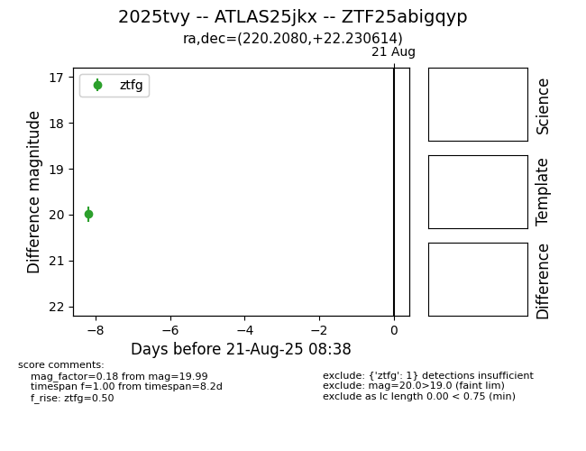

Target 2025tvy at 2025-08-21 11:20, see:
FINK: fink-portal.org/ZTF25abigqyp
Lasair: lasair-ztf.lsst.ac.uk/objects/ZTF25abigqyp
ALeRCE: alerce.online/object/ZTF25abigqyp
TNS: wis-tns.org/object/2025tvy
YSE: ziggy.ucolick.org/yse/transient_detail/2025tvy
alt names
ZTF25abigqyp (ztf,alerce)
2025tvy (tns,yse)
ATLAS25jkx (atlas)
coordinates:
equatorial (ra, dec) = (220.2080,+22.23061)
galactic (l, b) = (27.7991,+64.72481)
photometry
last ztfg=19.99
1 ztfg detections
